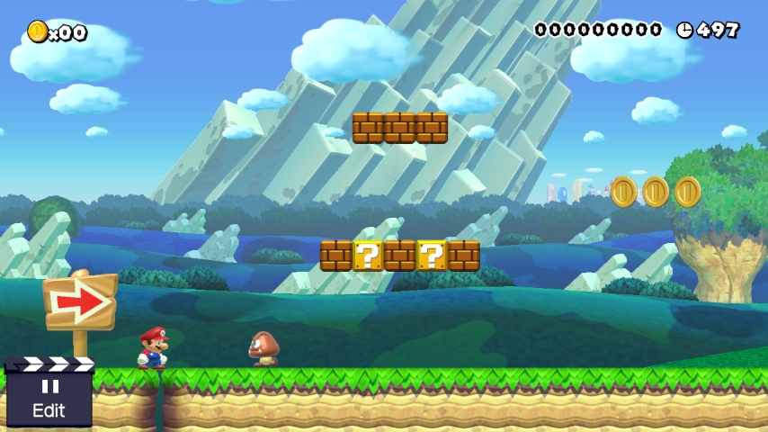

The Super Mario Maker
Super Level-Making Guide
Welcome!

Are you tired of making crummy levels in Super Mario Maker?
Are you ready to take your game up to the next level?
Well you've come to the right place!
Are you tired of making crummy levels in Super Mario Maker?
Are you ready to take your game up to the next level?
Well you've come to the right place!
Let's start with the basics!
So you want to create a level? Well, luckily for you, Super Mario Maker is a simple and intuitive game that allows you to create the levels that you’ve always wanted in a Mario game, featuring four different styles from Mario history, six different themes, and a ton of enemies, hazards, and platforms to choose from.
First you need to pick a style for your level. As I mentioned before, there are 4 to choose from: the original Super Marios Bros., Super Mario Bros. 3, Super Mario World, and New Super Mario Bros. U.
It is important to think carefully about which style you want, since there are exclusive items and mechanics for each one. If you aren’t careful, you could add an element that, due to the style you chose, allows the player to bypass a certain part of your level. This is known as “breaking” the level, and it’s a phrase that is best understood through trial and error rather than text.
However, I’ve provided a little table that summarizes the differences between styles to hopefully help prevent a few of those errors. This is by no means an all-inclusive list, but it should help you decide which style is best for your level.
| Super Mario Bros. | Super Mario Bros. 3 | Super Mario World | New Super Mario Bros. U |
|---|---|---|---|
|  | |||
|
|
|
|
Now that you've chosen a style for your level, it's time to choose the theme for it!
There are 6 different types of themes in Super Mario Maker. Themes allow you to change the type of level you're creating, and affect the music and overall look and mechanics of your level.
With all 6 themes available for all 4 level styles, the amount of choice is quite staggering. Here's a quick look at all of the themes in each style:
It is important to note that each theme has different hazards and items to work with as well.
Last Notes
These tips barely scratch the surface of all Super Mario Maker has to offer. Now I leave you to create your own levels, but not before a few final tips!
If you would like for me to review your levels, send your level codes here:
erh08079@uga.edu
All images are protected under fair use. See here for more details.